id="js_content" style="">1948年下旬，三大战役爆发，国民党节节败退。
同时，金圆券贬值严重。
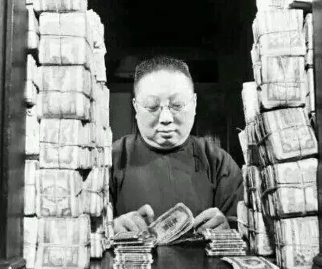
民间有个段子：你早上带着一大沓钞票准备吃碗面，如果你吃的太慢，可能那一大堆钱连一碗面的账都不够付。
恶性通货膨胀下民怨沸腾。
因此，当时南京国民政府内忧外患，政权岌岌可危。
有不少官员自觉形势不妙，更是准备最后捞一把国难钱，政府贪污腐败更加严重。
这俨然一副大厦将倾的末日场景。
此情此景下，一群左翼电影人想要拍摄一部作品来记录和见证中华民族所面临的时代巨变。
他们中有著名导演郑君里、沈浮以及陈鲤庭。
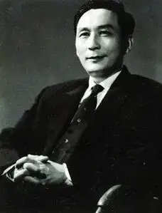
△郑君里，1911年-1969年，出生上海，曾参演《火山情血》、《奋斗》、《大路》、《新女性》，演技精湛，曾在明星影片公司，郑君里和阮玲玉分别是男、女一号演员；其演技曾受到鲁迅的称赞。1930年代拍摄了较多抗战题材作品；1940年代郑君里与蔡楚生合作编导了《一江春水向东流》；1948年，参加了电影剧本《乌鸦与麻雀》的集体创作，并单独执导该片，这是他首次单独执导，该片于1957年获文化部1949～1955年优秀影片一等奖
有曾因针砭时弊而入狱的著名作家、编剧陈白尘。
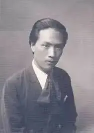
△陈白尘，1908年- 1994年，早年追随田汉，成为南国社骨干之一， 1930年加入左联，1932年加入中国共青团，同年9月被国民政府抓捕下狱，1935年出狱，其后成为自由撰稿人、自由编剧，陈白尘对于讽刺喜剧拥有独到的贡献，代表作有《升官图》等，被誉为“中国的果戈理”。
还有一代表演大师赵丹。
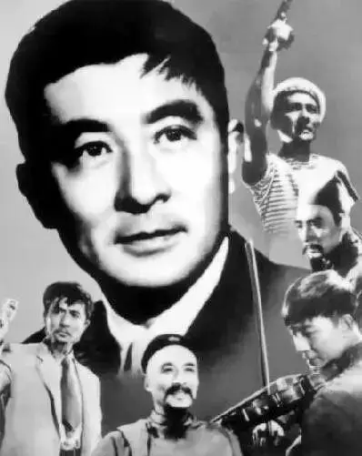
△赵丹，1915-1980,中国著名演员，曾主演《十字街头》、《马路天使》、《中华儿女》、《乌鸦与麻雀》、《武训传》、《李时珍》、《林则徐》等著名电影
他们满腔热血，关心时政，在一个晚上便讨论出了一个电影剧本的梗概，并取名为《乌鸦与麻雀》。
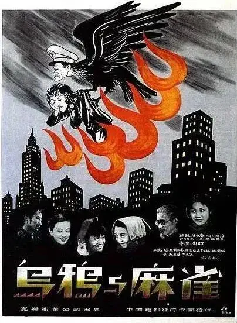
乌鸦即代表当前黑暗腐败的南京国民政府。
叽叽喳喳乱作一团的麻雀则代表了时代巨变下普罗大众的迷茫和艰辛。
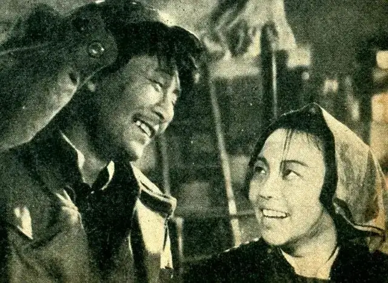
从名字便可以知道这一定是一部讽刺当局的辛辣之作。
当时，他们为了避免被政府封杀，专门准备了两个剧本，并将一个经过删改的剧本送去报审。
报审通过后，他们却偷偷地按照另一个原汁原味的剧本去拍摄。
不料，拍摄过程中还是被审查部门发现，并被要求立刻停拍，罪名是“扰乱社会治安，破坏政府威信”，并没收了已经拍好的胶片。
可这并未阻止摄制组的工作，他们将剧本藏在摄影棚顶破麻袋包着的稻草里，白天在摄影棚里休息，晚上便开机偷偷拍摄。
在影片拍摄近一半时，1949年上海解放，摄制组终于可以正大光明地拍摄剩余部分。
1949年10月1日新中国成立，11月1日《乌鸦与麻雀》上映，电影广受好评，尤其深被周恩来喜欢。
这部作品，如今在豆瓣上的评分也高达8.6，成为中国电影史上一部不可多得的佳作！
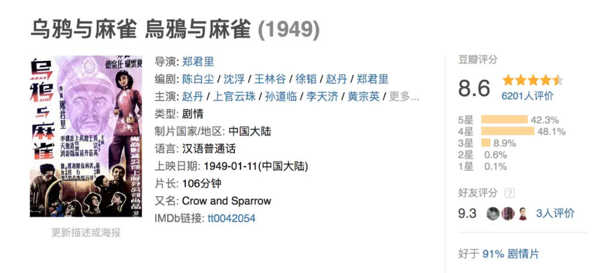
-01- 怂包
这部作品讲述的故事非常简单。
1948年冬季，解放军取得淮海战役的成功，这成为共产党取得优势的分水岭。
而远方的战况也深深地牵动和影响着上海居民的生活。
在上海石库门，就因为当前时局发生了一件争房斗争。
所争房子本是孔有文的房产，他是一名普通的报馆校对员。
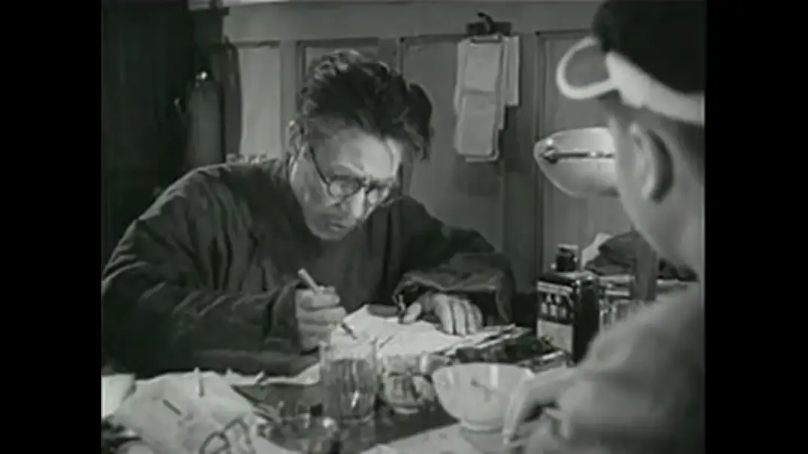
因为无权无势，后来房子被汉奸侯义伯强行霸占。
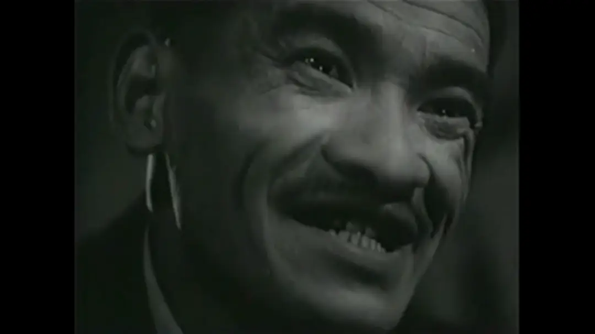
抗战胜利后，不想侯义伯又摇身一变成为了国民党国防部某科科长。
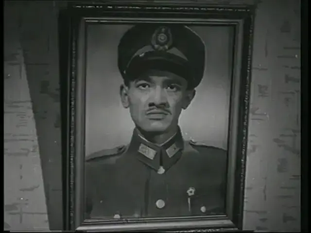
于是，孔有文的房子一直被侯义伯霸占。
房子被霸占后，侯义伯将二楼留给姘妇余小英使用。
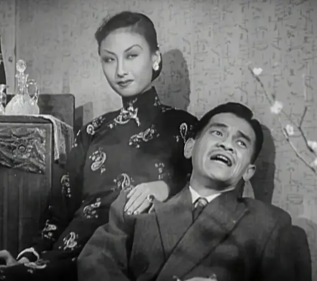
为了赚钱，他还将一楼租给了两家租户。
一家是知识分子华洁之，他是一名中学教师，他的妻子则在家里照顾女儿，长相颇有几番姿色。
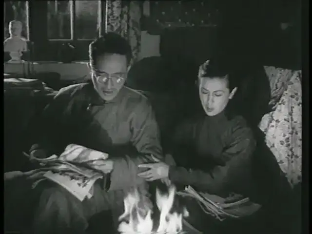
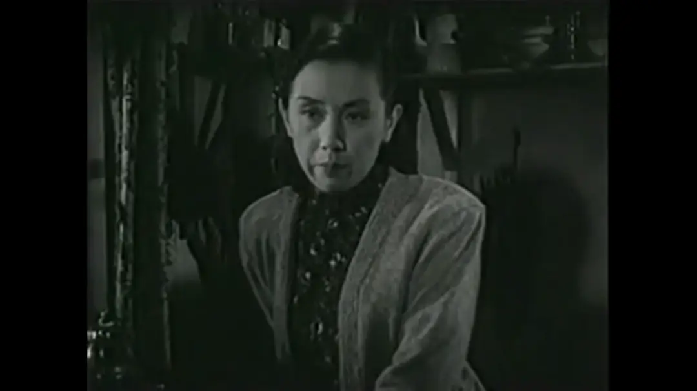
另外一家是摊贩肖老板夫妇，他们头脑灵活，在乱世里投机倒把地过活着。
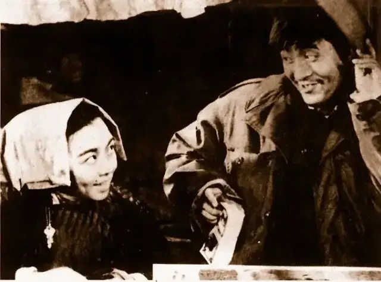
而可怜的孔有文，儿子参加了新四军，他一个老人则被侯义伯赶到后堂一间逼仄的房间里居住。
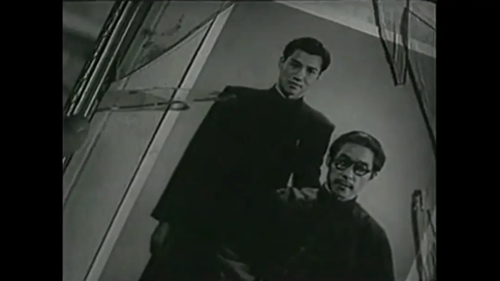
他们三家人都对蛮横的孔有文敢怒不敢言。
而这样的局面被国民党节节败退的战况打破平衡。
侯义伯觉得自己前途堪忧，想要赶紧把房子转卖了捞一把跑路。
而华洁之一家和肖老板一家则认为这是孔有文拿回自己房子的绝佳时机。
于是，乌鸦与麻雀之间的斗争便从这场争房斗争开始.....
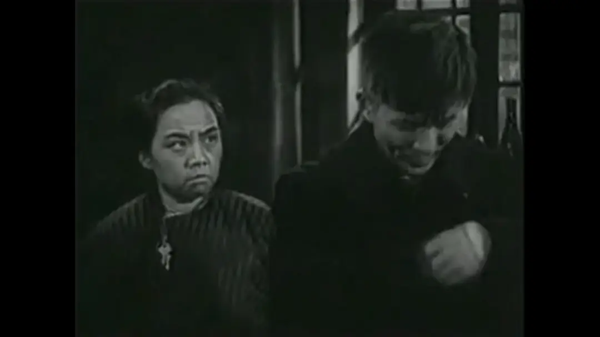
故事虽然简单，但这部电影最成功的地方是活生生地再现了当时大众的百态。
电影并未生硬地美化普通人，而是将作为人粗鄙又善良、清高又虚伪、懦弱又坚强的复杂全部呈现出来。
面对穷途末路的侯义伯，如果三家人能够齐心抗争，将房子保住并未难事。
可一向明一套、暗一套的中国人总是难以拧成一根绳子的。
比如，电影刚开始，华老师一家和肖老板一家都在为老孔抱不平，看上去非常有正义感。
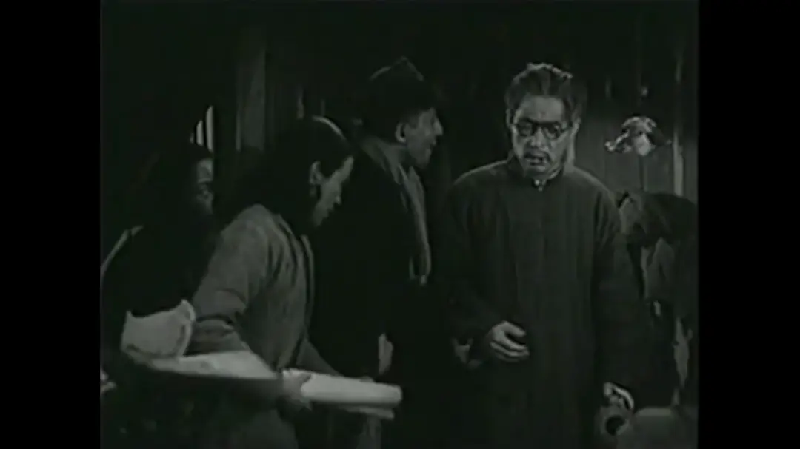
可事实上，他们都是各怀鬼胎、不愿自己出头，想要顶着老孔去出头把房子搞定。
可一直被欺负的老孔早已经对未来以及人间的公道失去了信心，对大家说：不论未来如何，搞来搞去，我们都是受罪的老百姓。
不论大家怎么劝勉，老孔都没有去争取的意愿。
老孔不愿意争取，侯义伯又在加快速度变卖房子，华老师一家和肖老板一家随时面临被赶走没有地方住的窘境。
于是，精明的肖老板夫妇开始给华老师扣帽子，说他是知识分子，比较会说话，这个事情必须要华老师出头去争取。
可华老师姿态清高，认为侯义伯这种汉奸、小官僚、党棍，根本就是流氓，根本没有沟通的必要。
可回到自己房间里，他却告诉妻子，像肖老板夫妻这帮做生意的，眼里就知道利益，他认为自己根本没有必要当肖老板的炮灰，去和有权有势侯义伯发生正面冲突。
于是，这个知识分子用表面清高，实则是不想吃眼前亏的精致回避了房子的问题。
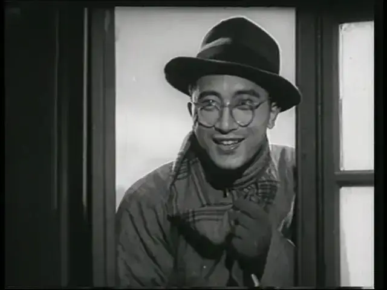
而一向精明、算的很清楚的肖老板自然也不想出头。
于是，面对侯义伯的逼迫和蛮横，三家人各扫门前雪，嘴上骂骂咧咧，实则早已打了退堂鼓放弃了自己的正当权益。
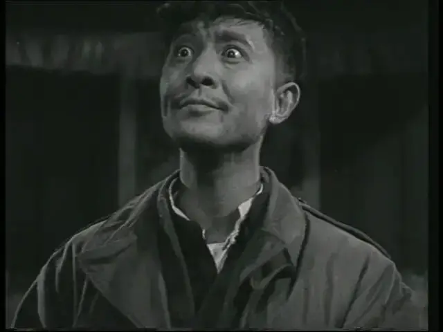
因此，当侯义伯的姘妇发现他们有些小动作时还有所担心，但侯义伯却笑着说：这帮家伙，我看透了，搞不出什么门堂来。
事实也如侯义伯所料。
华老师将希望放在学校上，他向新到任的校长申请住房。
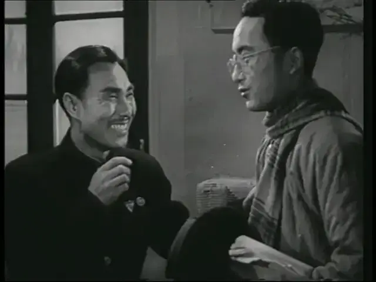
而尴尬的是，当时国民政府在对校园实行白色恐怖，老校长和几位老师因言获罪被抓，而新校长正是政府派出来进行校园维稳的。
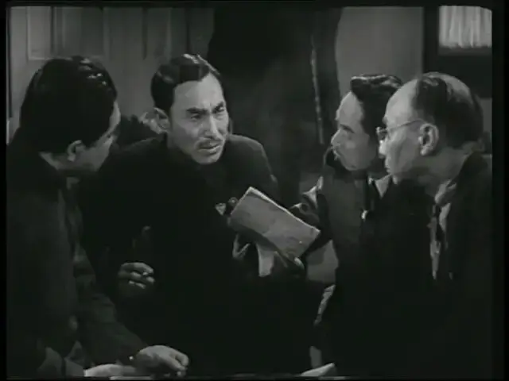
所以很多老师同学通过联名信表达抗议和不满，而华老师也是联名人之一。
可现实很骨感，他又因为房子的事情有求于新校长。
新校长也想着通过房子来拉拢华老师举报闹事的老师和学生。
面对这样的挑战，作为知识分子的华老师想清高，却没有清高的资本，想勇敢却总是顾忌重重。
所以，他在两边都表现地非常暧昧。
最终，他不仅被同事怀疑为叛徒，更遭到校长记恨并被捕入狱。
对于肖老板夫妻，他们是生意人，心里早已经打起了如意算盘。
他们知道侯义伯要急着转手房子，所以，他们趁着这个机会狠狠地杀价。
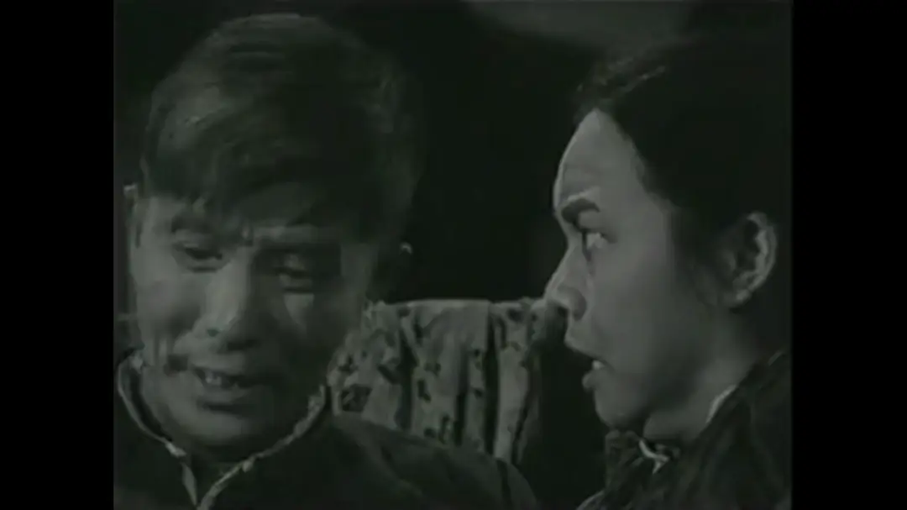
最终，侯义伯答应以非常低的价格将房子转手给他们，即三根金条。
肖老板夫妻并没有这么金子，但是一向头脑灵活的他们看到了黄金市场价格不断上涨的机会。
所以，他们将自己珍贵的货物和结婚首饰抵押给侯义伯，拿到了一些金圆券。
然后再拿着金圆券去换黄金，按照当时市场的涨势，他们有信心将本钱炒到三根金条。
到时候，他们不仅能够拥有一套房子，还可以收房租获得稳定的收入，想到美好的未来，夫妻俩都不禁乐开了花。
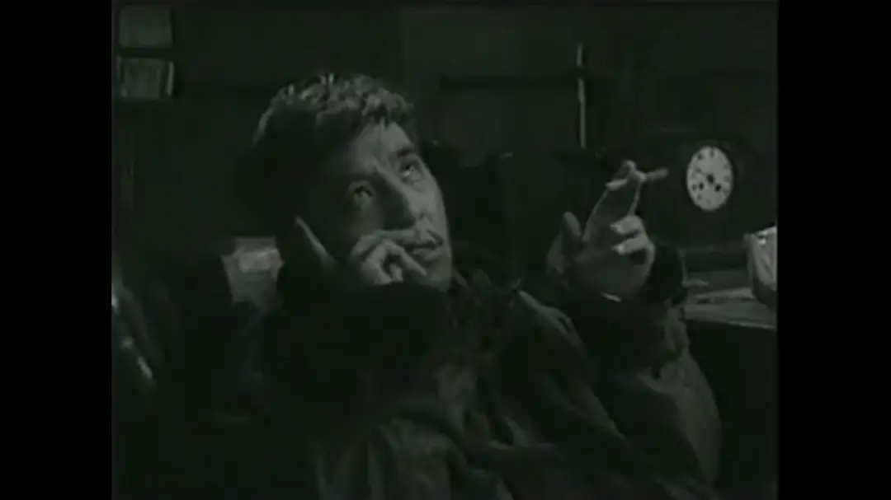
可当时因为金圆券贬值严重，大众都是挤破了头想要兑换黄金，肖老板夫妻连夜排队不仅没有换到黄金，还被群众当做黄牛痛打一顿。
更加让他们无法接受的是，因为他们迟迟兑换不到黄金，短短几天，黄金价格暴涨，他手上的金圆券购买力更进一步下降，之前可以兑换半斤黄金，如今只能兑换一两。
肖老板夫妻不仅美梦落空，更是将全部家当赔上，这是一件多么残酷的事。
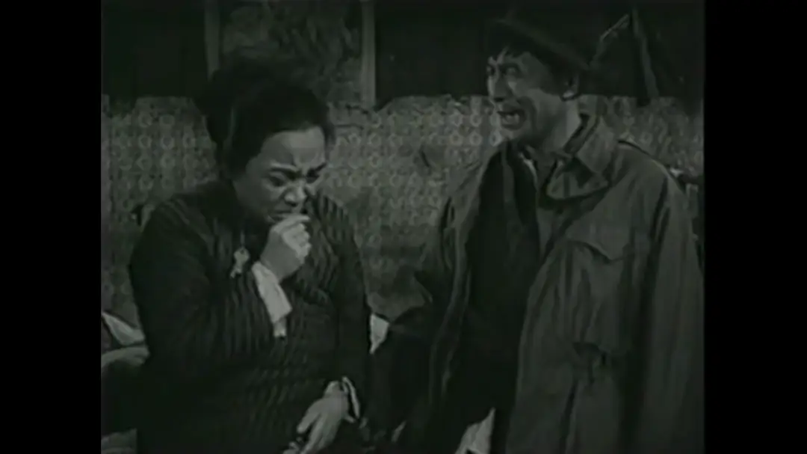
-02- 大厦将倾
这部作品，不仅生动地刻画了市民的百态和迷茫，更借着他们的遭遇对当时的社会进行了批判和记录。
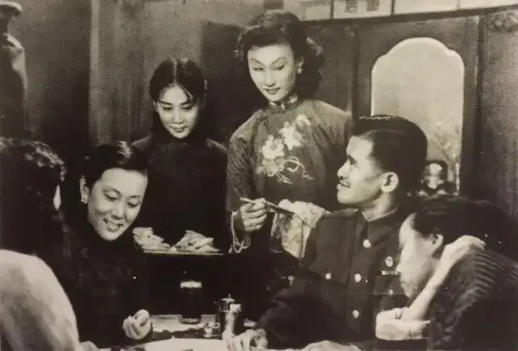
首先是政治迫害。
电影中虽然没有过多刻画这一部分，不过在只言片语中都能够窥见当时政治环境的肃杀之气。
华老师被抓捕并不是一个常规合法的抓捕过程。
这场抓捕是一场人间蒸发，华太太不知道自己先生是被谁抓捕，也不知道被抓捕到哪里，更不知道为何被抓捕。
当华老师被“消失”后，她先找了律师，律师表示这种案子不敢接。
后面又去找了教育局秘书，人家摆摆脑袋：“这事儿我们管不着。”
最后华太太找到警备司令部，甚至向军官下跪求情，可军官却告诉他：“我跟你说了，我们根本没有抓过人啊！”
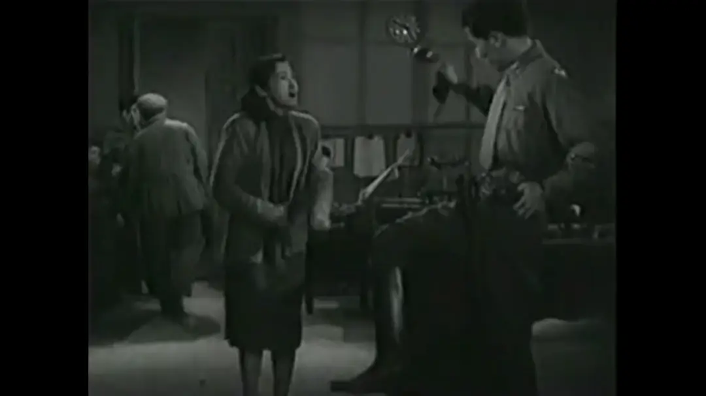
走投无路之际，华太太找侯义伯帮忙，可侯义伯却毫无廉耻地提出让华太太以美色作为条件。
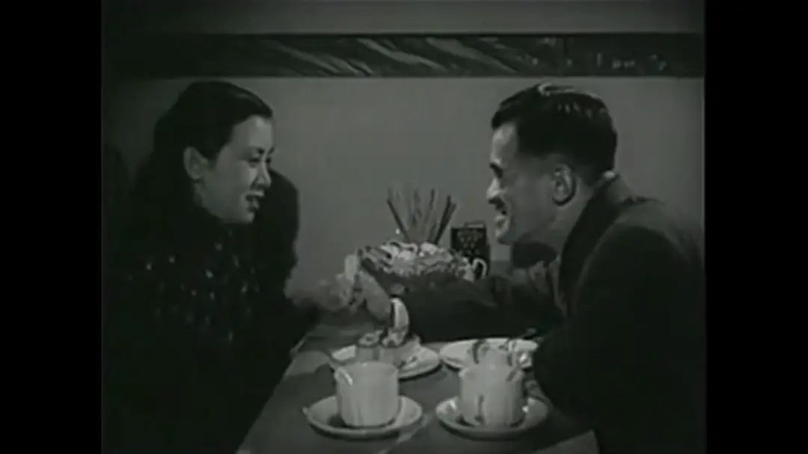
这让华太太绝望。
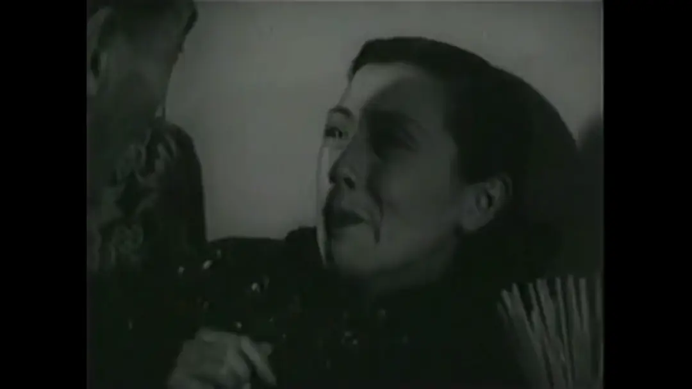
从电影结尾可以知道，当时被抓的很多老师后来直接被枪毙，这些悄无声息消逝的生命都在控诉着当局的邪恶。
其次是社会经济的奔溃。
电影中肖老板夫妻的很多事都是对当时历史社会境况的还原。
比如肖老板屯了很多市场上紧俏的商品，如菊花牌牛奶、玻璃丝袜、盘尼西林、香水等，在那个经济崩溃的时代，粮食、生活用品比钞票更靠谱。
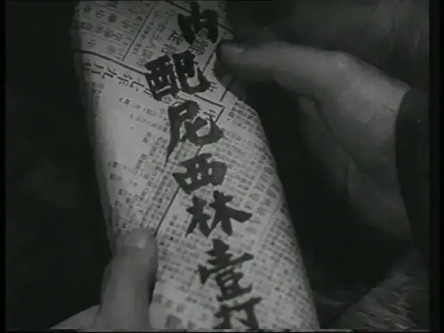
在溃败的经济中，黄金自然也是最保值的方式。
当时，很多投机商用金圆券换黄金后在黑市高价抛出，再用金圆券换金子，再抛掉，来不停地赚差价，片中肖老板打的正是这个算盘。
所以，黄金非常热门，当时收房租都是用的黄金而不是金圆券。
每天在中央银行门外人山人海扎堆换黄金的景况蔚为壮观，甚至还发生过踩踏致死的悲剧。
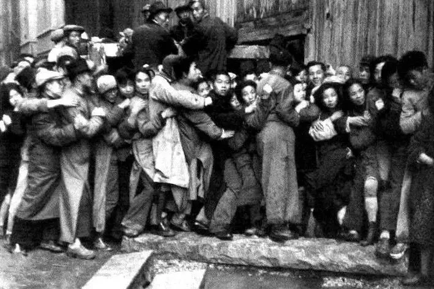
△亨利•卡蒂埃•布勒松摄影作品《轧金子》，记录了当时的情况
这一点电影中也有表现，肖老板夫妻连夜敢去排队的路上，遇到一个瞎子也去换金子，便嘲笑：“瞎子也来轧金子！”
瞎子回击：“瞎子就不能轧金子！？
除了金子，按照户口领取的大米也是挤破了头都领不到......
这些社会经济全面崩塌的迹象都最终导致国民党的失败。
所以，本片通过房子隐喻国民党的命运，属于人民的东西你可以过去一直霸占，但总有一天你要还回来！
-03- 国庆里的希望与责任
电影最后的结局当然是房子物归原主。
虽然有三家人走投无路不得不团结的原因，更多则是因为国民党的溃败他们才能收回房子。
并不是因为外部力量有多强，更多是因为作恶者内在的自毁性。
这部电影并未回避国人的问题，而是在结尾真诚地表达了他们对于新中国的希望和憧憬。
当房子收回后，老孔为房子贴上了一副经典的对联：
爆竹声中一岁除, 春风送暖入屠苏。
千门万户曈曈日, 总把新桃换旧符。
接着最后的自白响起：“新年要来了，新的社会也要来了。我们也得换一副脑筋才成。我们这些旧社会里的人呐，都有很多旧的毛病，除旧更新从头开始，好好的去学学做一个新人了。”
经历了甲午战争的失败，经历了八国联军的失败，经历了军阀混战，经历了八年艰辛的抗日战争，又经历了骨肉相残的内战，这是当时每一个中华儿女对于新中国的梦想和憧憬。
可是，现实是非常残酷的，这些对祖国怀着最深沉、勇敢的爱的人却倒在了那些暗无天日的岁月里。
本片导演郑君里，在上海文艺整风运动中首当其冲，被批斗为文艺界的黑线人物。
在那段岁月里，郑君里每天凌晨3点起床写交待材料，6点半出门参加劳动改造，晚8点半回家。
后来他又被送到上海电影制片厂里的牛棚隔离，不能见家属，还被自己带出来的导演、也是自己最为亲近的朋友扇耳光。
1969年，郑君里病重，当时领导想要重新启用他，向他暗示“你好好交待，你放心好了，肯定会有出路的。”
而当时已身患肝癌的郑君里只能微弱的回答：我是一直在交待……
当年4月份，这位历经沧桑的大导演终究没有挺过残酷的岁月，在上海中山医院病逝。
而本片主演赵丹一样悲惨。
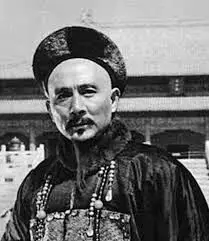
1967年年底，赵丹被打倒抓入监狱，并被要求持续不断地写检讨，交代‘错误’、‘罪行’。
他在狱中遭受到精神和肉体双重折磨，1980年赵丹因患胰腺癌在北京逝世，留下遗言：
你们大可不必领导怎么种田、怎么做板凳、怎么裁裤子、怎么炒菜，大可不必领导作家怎么写文章、演员怎么演戏。
文艺，是文艺家自己的事，如果你们管文艺管得太具体，文艺就没有希望，就完蛋了......
想到他们在《乌鸦与麻雀》里的勇敢和热忱，再想到他们的命运，这些令人唏嘘的残酷才是我们在这个节日里需要正视和反思的东西。
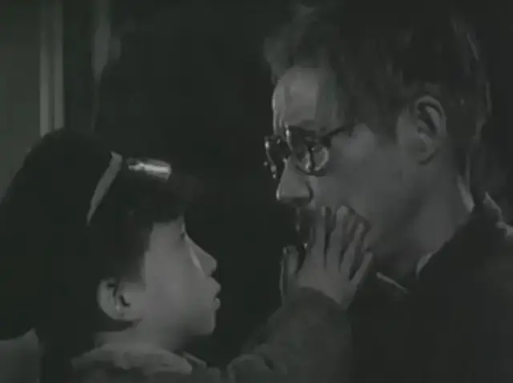
我希望用这部电影带大家领略到那份时代巨变下的爱国激情，再次思考那些历史里的教训和提醒。
国庆是欢乐的，但同时也是沉甸甸的，这个节日里承载着太多人的鲜血和希望。
最后将《黄飞鸿：狮王争霸》里的一段话送给大家，当时慈禧为了彰显大国神威，大办狮王争霸。

当黄飞鸿夺得狮王后，他质问李鸿章：
“到底谁赢了，谁输了？大人为了大显我民神威而举办的这场‘狮王争霸’，死伤这么多人，在世人面前，其实我们都输了。
依小民之见，我们不只要练武强身、以抗外敌，最重要还是广开民智、智武合一，那才是国富民强之道。区区一个牌子，能否改变国运？还请李大人三思。这金牌，留给您做纪念吧！~告辞了！“
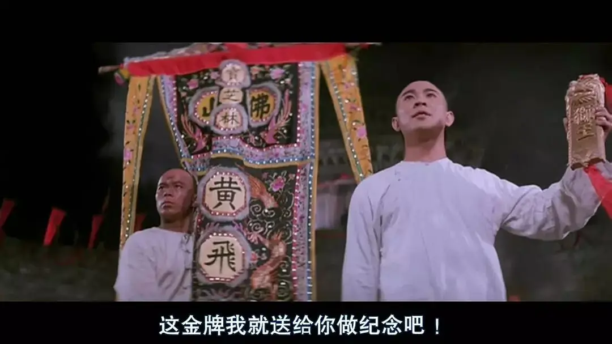
-END-
相关推荐
▼
（点击图片即可获取全文）
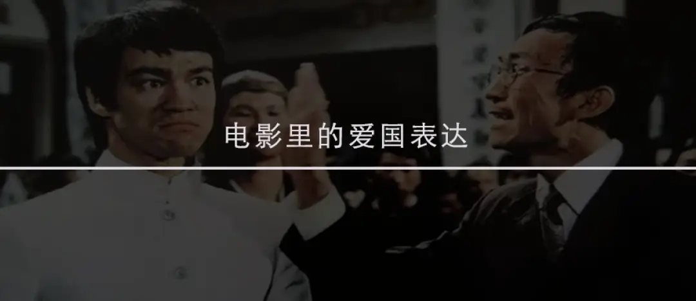
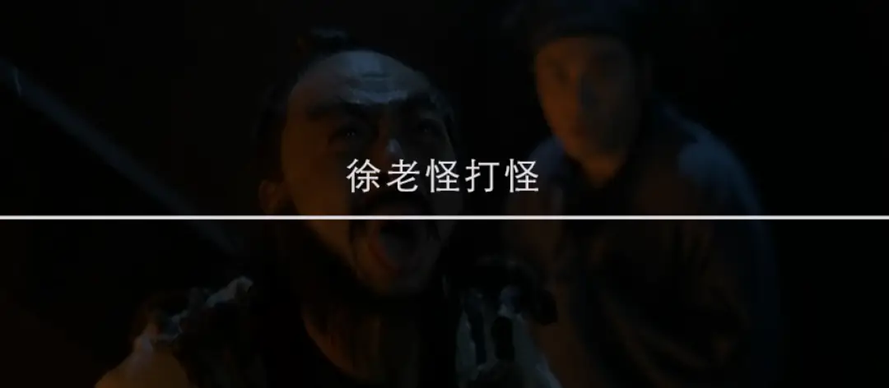
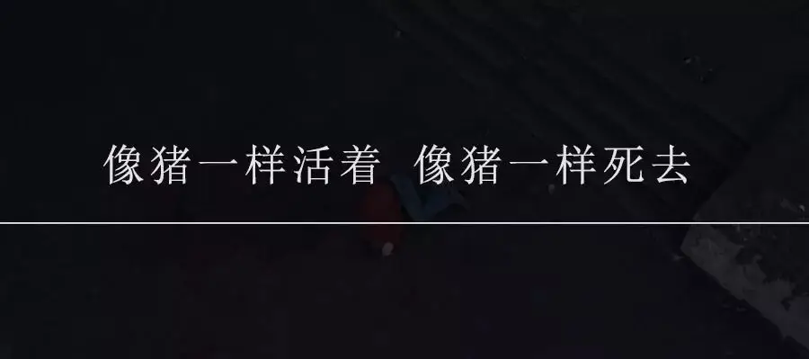
这里没有挑逗你眼目情欲的小鲜肉
也没有挑动你肉体情欲的段子
更没有膨胀你今生骄傲的鸡血
我们只在乎那些最质朴真诚的作品
在那里我们才能恢复真正的想象力
我们也坚信这才是我们真正需要的

ID:Six_hundred_hits
长按二维码，一键关注
【六百击】
电影评论
尽情分享朋友圈

微信二维码打赏通道